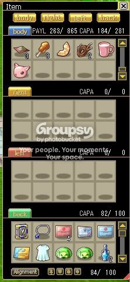

หน้า 76 จากทั้งหมด 276

โพสต์แล้ว:
ศุกร์ 11 ม.ค. 2008 8:48 pmโดย ECO
ไม่รู้ ช่วยไงดีแฮะ ....
เดี๋ยวทำส่วน weapon ให้ไหม
ว่าแต่ weapon มันก็มาจาก แร่>>>เหล็ก>>>อาวุธ
แล้วจะจัดไงงิ หรือเอาเฉพาะพวกเศษอาวุธที่ดรอปงิ
ปล.แอด msn มาก็ได้ ข้างล่าง
โพสต์แล้ว:
เสาร์ 12 ม.ค. 2008 12:49 amโดย ECO
เซ็งๆๆๆๆๆๆๆ
วันนี้ไปเดิน เซ็นทรัลลาดพร้าวกะแฟนกัน 2 คน (หุหุ)
ไปซื้อ สตาร์ทเตอร์คิทของ ECO มา 1 กล่อง 99 บาท
กะว่าจะสุ่มเอา เซท 1
เอาอันไหนก็ได้ที่ไม่ใช่ไอไก่เหลืองตัวกระเปี๊ยก
แต่เหมือนสวรรค์แกล้ง
ดันสุ่มได้ไก่เหลืองซะงั้น
ฮือๆๆๆๆๆ มันเล่น มีทุกอย่าง 1 หมดเลย T_T
สงสัยคงต้องโอนให้แฟนไปตกแต่งบ้านซะล่ะมั้ง T+T
โพสต์แล้ว:
เสาร์ 12 ม.ค. 2008 5:33 pmโดย ECO
วันนี้เป็นวันที่ดีใจสุดๆT^T...
ในขณะที่ตีอยู่แมปโมโม่ เก็บKeetinไปพลาง เก็บเลเวลจ๊อบไปพลาง(ตัวเรนเจอร์ได้เปลี่ยนอาชีพแล้ว) อาหารเกิดหมด เลยตีต้นไม้หาของมาทำแอปเปิ้ลแห้ง...
แล้วมันก็ตกปุ๊!!!

อยากจะกรี๊ดลั่นแมป ซิกๆ มันเกิดขึ้นแล้ววววววววววววววว...
ไม่ทันได้ถ่ายรูปตอนมันวางอยู่บนพื้น เพราะตอนนั้นเห็นแล้วคว้าทันที(อาการเดียวกับตอนที่เพื่อนในตี้ตีหมาแดงแล้วปลอกคอหล่น) กลัวเน็ตหลุดสุดๆ...
โพสต์แล้ว:
เสาร์ 12 ม.ค. 2008 5:44 pmโดย ECO
ยินดีด้วยค่ะ กระรอกน้อย แบบไม่มีเม็ดลูกแก้วแดงๆ ด้วย ^o^/
ปล. อยู่ในสภาวะวิกฤติ ... ของส่งเควส BountyHunter,Necromancer หมดตัว (อีกแล้ว) อีกไม่เกินสัปดาห์ ของส่งเควส Vates,Alchemist ก็จะหมดตาม
ปล2. ทำไมบอร์ด ECO ถึงไม่อนุญาติ HTML CODE นะ = =
โพสต์แล้ว:
เสาร์ 12 ม.ค. 2008 7:37 pmโดย ECO
ถามเกี่ยวกะของหลอมหน่อยนะคับ
คือว่าพวกหูแมวอะไรพวกนี้ เห็นเค้าบอกว่าถ้าหลอมกับหมวก cap lv.5 แล้วจะสามารถนำไปหลอมใหม่ได้เหรอครับ
คือจะเอาที่หลอมแล้วมาหลอมใหม่ได้หรือเปล่าอ่ะคับ (อยากจะเอามาหลอมซ้ำกะหมวก 75) น่ารักดี ^^
โพสต์แล้ว:
เสาร์ 12 ม.ค. 2008 11:40 pmโดย ECO
BustTong เขียน:ถามเกี่ยวกะของหลอมหน่อยนะคับ
คือว่าพวกหูแมวอะไรพวกนี้ เห็นเค้าบอกว่าถ้าหลอมกับหมวก cap lv.5 แล้วจะสามารถนำไปหลอมใหม่ได้เหรอครับ
คือจะเอาที่หลอมแล้วมาหลอมใหม่ได้หรือเปล่าอ่ะคับ (อยากจะเอามาหลอมซ้ำกะหมวก 75) น่ารักดี ^^
หลอมทับได้ครับ แต่อย่าเลือกผิดล่ะ :wink:
โพสต์แล้ว:
อาทิตย์ 13 ม.ค. 2008 12:13 amโดย ECO
เวล 68 กับอีก 88 เปอร์ละ
ยังไม่ได้เริ่มตุนของเควสเวล 69 เลย - -*
หลังจากที่มะวาน สุ่มไก่เหลือง (นรก) มา 1 ตัวอย่างเศร้าใจ - -*
วันนี้สวรรค์ยังพอเข้าข้างอยู่บ้าง เอาเอเลไปเมืองเหนือเล่นๆ ยิงแถวนั้น รอแฟนแต่งบ้านเสร็จว่าจะไป มอร์ก ด้วยกัน
ก็ยิงเล่นๆ ไปเรื่อยๆ
และในที่สุด ก็ได้ "Blue Dragon Egg" มาอีก 1 ใบ
หลังจากที่คราวก่อนก็ได้มาแล้ว 1 ใบจากการยิงเล่นๆ - -*
หุหุ เดี๋ยวว่าใบนี้จะให้แฟนละกัน ^^
โพสต์แล้ว:
อาทิตย์ 13 ม.ค. 2008 12:51 amโดย ECO
หง่า โชคดีจังเลยงิ
เรายังไม่เคยได้มังกรเลยอ่ะ ซื้อเอาเองตลอด 55 ชีวิตน่าเศร้า
แต่เด๋วคงมีอะไรดีๆ เข้ามาเอง (เช่นเติม 200 ได้บูส อะไรประมาณนั้น)
แต่ตอนนี้เวล 75 ขอเชยชมชุดลิเกสุดหรูไปก่อนละกัน เท่ดีอ่ะ
รู้สึกภูมิใจ อิอิ
ปล. เพราะว่ามีคนเข้ามาทักว่า "ชุดเท่ดีเนอะ" แล้วจากไป แต่แค่นี้ก้อทำให้เรารู้สึกดีได้แล้วล่ะ ^^
สู้ต่อไป
โพสต์แล้ว:
อาทิตย์ 13 ม.ค. 2008 8:03 pmโดย ECO
ขอยคุณพี่ lafara อีกทีงิ เลยนึกขึ้นได้เลยว่า
Marionette Create, Machine Create, Accessories Create มันก็มี........... (ไม่นับ Kil ทั้งหลายอีกเป็นตับ)
ม่าย ~/TAT\~
ท่าน earth หมาไม่ได้เล่น m อ่ะงิ เล่นแต่ irc ยังไงหมาคงลองทำๆแล้วเว้นที่ไว้เผื่อด้วยล่ะงิ
• วัตถุดิบชนิดอาหาร
• วัตถุดิบชนิดยา
• วัตถุดิบชนิดพืชและไม้
• วัตถุดิบชนิดผ้า
• วัตถุดิบชนิดหินแร่
• วัตถุดิบชนิดทำอาวุธ (คงเป็นลูกธนู, alloy steel sword, steel staff)
• วัตถุดิบชนิดอุปกรณ์ประกอบ (silver driver, needle, knit needle ....)
• วัตถุดิบชนิดชิ้นส่วนจากศัตรู
• วัตถุดิบชนิดอื่นๆ
แต่จริงๆก็คงมีแถมพวกที่อาจจะเป็นของสำเร็จขั้นสุดท้าย/ของที่จริงๆแล้วไม่ได้เป็นวัตถุดิบ ปนๆไปด้วยกระมัง
อยากได้กระรอก!!!
/me จ้องกระรอกท่านโนตาเป็นมัน ปิ้งๆ +w+
โพสต์แล้ว:
จันทร์ 14 ม.ค. 2008 5:11 amโดย ECO
:) พอดีอยากลองเล่นชาวนาสายซัพช่วยแนะนำทีว่าอัพ stat ไรมีสกิลไรดีๆที่จะซัพปารตี้ได้มั่ง
โพสต์แล้ว:
จันทร์ 14 ม.ค. 2008 9:17 amโดย ECO
อยากได้กระรอก!!!
/me จ้องกระรอกท่านโนตาเป็นมัน ปิ้งๆ +w+
ม่ะห้ายยยยยยยยยยยย~
แต่ตั้งแต่เล่นเรนเจอร์นี่สัตว์เลี้ยงเต็ม หมาแดง1ตัว ลูทเพื่อนในตี้มา ม้าดรอปมา3ตัว แจกเพื่อนที่กลับมาเล่นใหม่อีก1 หนอนลากไว้แบกของฉุกเฉิน1ตัว หนอนลากพ่อค้าที่ดรอปเองอีก2ตัว หนอนขนจิ๋ว1ตัว...
ปล. วันนี้ลางานมานอนพักเพราะเป็นไข้หวัด แต่พ่อปลุกให้ลุกขึ้นมาปิดประตูบ้านเมื่อกี้นี้ เพราะเขาจะไปเชียงใหม่ ฮ่วย แล้วไล่ให้มานอนทำไมตั้งแต่แรก นอนไม่หลับแล้ว~
โพสต์แล้ว:
จันทร์ 14 ม.ค. 2008 9:34 amโดย ECO
ตกลงกระรอกนี่มันดร็อปจริงไหมอ่ะ ไม่เคยเห็นสักที
ตอนนี้ตัวชาวนาแค่ทำเควสส่งอย่างเดียว กำลังปั้น ranger ไว้ใช้หาของที่ชาวนาหาไม่ได้
โพสต์แล้ว:
จันทร์ 14 ม.ค. 2008 9:45 amโดย ECO
ยืนยันว่าดรอปเพราะเจอเองมากับตัว แต่ดรอปยากมาก แบบตั้งใจตีให้ตายยังไงก็ไม่ตก- -"...
โพสต์แล้ว:
อังคาร 15 ม.ค. 2008 12:48 pmโดย ECO
ขอฝากประกาศหน่อย
ใครอยู่โมจิ และซื้อชุด มาริโอนิส(75) ได้ช่วยสงเคราะห์ลูกผมหน่อย ติดต่อได้ที่ Frigga หรือในบอร์ดนะครับ
โพสต์แล้ว:
อังคาร 15 ม.ค. 2008 1:49 pmโดย ECO
หยิบ "Broken Machine Axe" มาได้ในราคา 150K
ถือว่าโอเคป่ะครับ - -*
ช่วงนี้ไม่ค่อยได้เดินตลาดเลยอ่ะ - -* เลยไม่ค่อยมั่นในราคา - -*